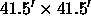

The photometric calibration of the SDSS imaging data is a multi-step process, due to the fact that the images from the 2.5m telescope saturate at , fainter than typical spectrophotometric standards, combined with the fact that observing efficiency would be greatly impacted if the 2.5m needed to interrupt its routine scanning in order to observe separate calibration fields.
The first step involved setting up a primary standard star network of 163 stars distributed around the Northern sky smith01. These stars were selected from a variety of sources and span a range in color, airmass, and right ascension. They were observed repeatedly over a period of two years using the US Naval Observatory 40-in telescope located in Flagstaff, Arizona. These observations are tied to an absolute flux system by the single F0 subdwarf star BD+17 4708, whose absolute fluxes in SDSS filters are taken from fukugita96. As noted above, the photometric system defined by these stars is called the u'g'r'i'z' system. A table containing the calibrated magnitudes for these standard stars is available from our web sites.
Most of these primary standards have
brightnesses in the range 8 - 13, and would saturate the
2.5-meter telescope's imaging camera in normal operations. Therefore,
a set of 1520  transfer fields,
called secondary patches, have been
positioned throughout the survey area. These secondary
patches are observed with the PT (§ 3.4); their size is
set by the field of view of the PT camera. These secondary patches are
grouped into sets of four. Each set spans the full set of 12 scan
lines of a survey
stripe along the width of the stripe, and the sets are spaced along the
length of a stripe at roughly intervals. The locations
of the patches used for calibrating the
imaging runs for the EDR are indicated in Figure 8.
The patches are
observed by the PT in parallel with observations of the primary
standards and processed using the Monitor Telescope
Pipeline (§ 4.5.2); the calibrated patches are
then used to calibrate the 2.5-meter's imaging data via the Final
Calibrations Pipeline (§ 4.5.3) to the 2.5-m preliminary
 system.
system.